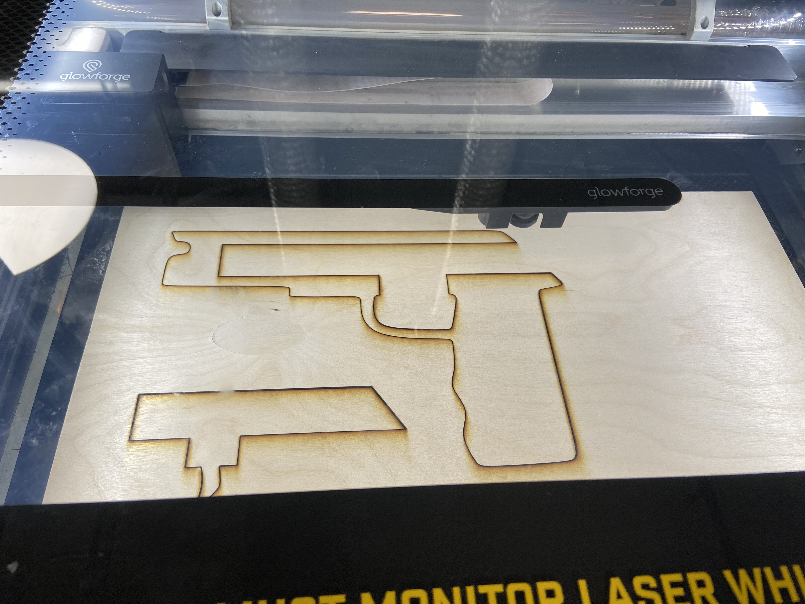

Final Project: Rubber Band Pistol
For my final project, I recreated one of my favorite childhood toy, which is a rubber band pistol. As the name suggests, it is a toy gun that shoots rubber bands.
The techniques I incorporated include:
1. Laser Cutting: laser cut draftboard for the frame
2. 3D-Printing: 3d-printed the trigger pieces
3. Rhino: modelled the gun and edited the trigger mesh on Rhino
4. Interference Fit: press-fitted the nuts to hold the trigger pieces
Part 1: First Idea
To begin, I worked on creating the frame of the pistol. I first drew lo-fidelity sketches to design the frames and understand how the pistol would work. The first idea was a simple sliding trigger that can be made up of four pieces.
Now the I knew what I wanted to design, I worked on creating the frame of the pistol digitally. I did this on Rhino and created the shapes using the point curve tool.
I laser cut the frames of the pistol using the 0.25 inches draftboard that I bought from Michaels. To do this, I first exported the frames from Rhino to an Adobe Illustrator file, which helps keep the dimensions. Afterwards, I exported the Illustrator file into a PDF file and uploaded the frames into the Glowforge platform. Because the woods are thick (in comparison to cardboard), I put the power to FULL and speed to 125. I also did two passes because the first pass was not enough to cut the pieces.

I glued the pieces together using the Elmer's Glue-All that I bought from Amazon. I needed to clamp the pieces while the pieces were drying for best quality, and so I put objects from my house that were heavy on top.

After I waited for 30 minutes, I tested my initial prototype. First, I realized that the handle was too big for me--2.83 inches seems to big for most people. Nevertheless, when I loaded the rubber band and pulled the trigger, the rubber band flew out with power and precision. However, sometimes the rubber band got caught, and I knew I could do better.
Part 2: Iterating and Designing the Second Idea
For my next idea, I wanted to incorporate different fabrication techniques into one single artifact. Thus, I bridged my previous idea with this new idea by creating a rubber band pistol that has a wooden frame and a 3d-printed trigger.
For my frame, I edited it such that the handle was more easy to hold.
For my trigger, I relied on a trigger mechanism based on...

Part 3: Laser Cutting the Frames
After I created my new designs, I went back to the studio to laser cut my frames. I used the same quarter inch draftboard with the same settings.

I did not like how the edges kept being burnt (should have tried using tape), and so I decided to try spray painting the overall wood to match the burnt color. My friend had a paint studio, and so I used the black colored spray paint that they had.

I left the paint to sit for 1 hour before coming back to it.

Part 4: 3D Printing the Trigger
Next, I worked on 3d-printing the trigger. The trigger consisted of two parts working concurrently, which are the trigger and the spinner. The trigger is the part that the user pulls, which leads to the spinner being spinned. The spinner is the part that holds the rubber band, and is loaded until the trigger is pulled. Other parts that I needed were the stick parts and the nuts to hold the sticks in place.

I faced some problems with the printing of the nuts because the measurement of the sticks were not in line with the measurements on Rhino. Therefore, I printed the nuts again, this time with more wiggle room. Sanding the sticks did not help.

Part 5: Putting it Together!
Now that I had all my parts, I started assembling my final project. This illustration demonstrates how the pistol shoots. The trigger's top part does not allow the wheel to spin. However, when the trigger is pulled, the wheel is no longer held back by the top part, but is instead held back by the bottom of the trigger. When the user releases the trigger, the wheel spins and the rubber band fires.

I glued the parts, similar to my first iteration, and clamped them for better drying.

EMERGENCY!
On the day of the presentations, I noticed that my gun wasn't functioning properly anymore. After closer examination, I realized the trigger was getting loose because of all the trials that I've done.

Therefore, I quickly rushed to the MILL and printed a new trigger, this time with a 100% infill so that it hopefully lasts longer.

I also 3d-printed the nuts so that they press-fitted the pistol and make the trigger stable. This is how the final product looks.

Bill of Materials
1. 1/4" Draftboard
2. PLA Filament
3. Elmer's Glue-All Multipurpose
4. Krylon Black Spray Paint
5. Rubber Bands (Medium)